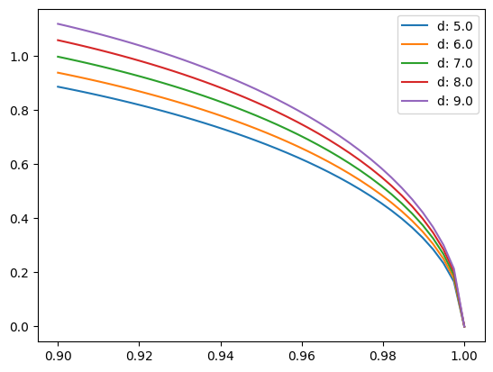
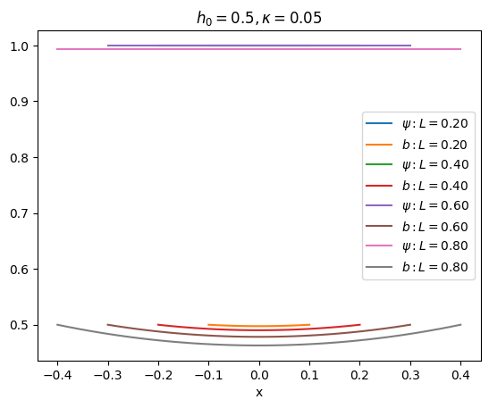
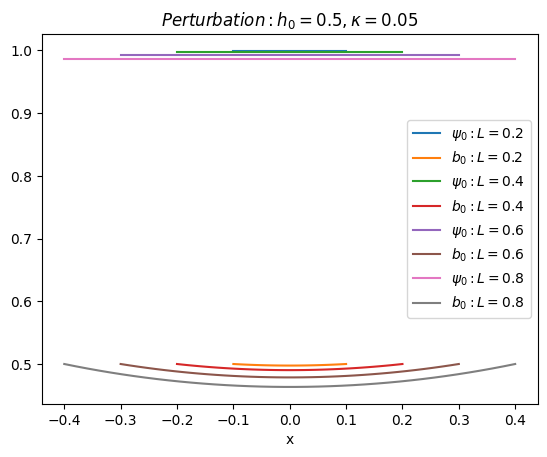
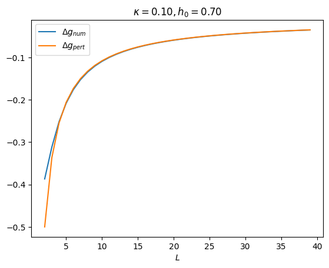
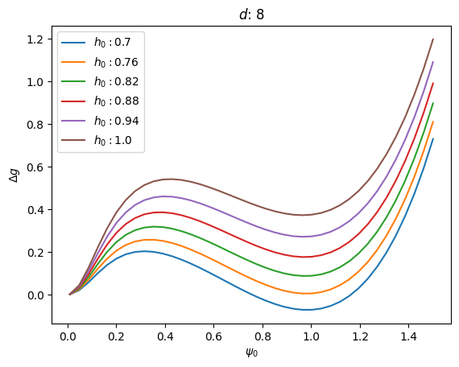
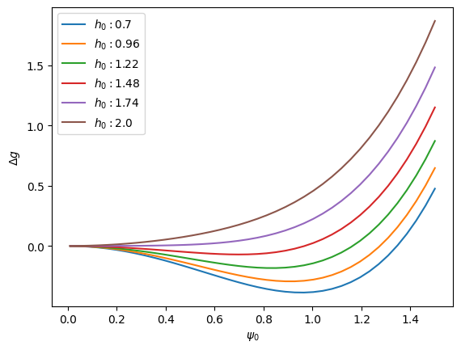

Type I perturbations#
We first plot (18) in different ranges:
a. \(d>d_c=\sqrt5\), \(\psi_0\) near 1#
import matplotlib.pyplot as plt
import numpy as np
def h0(psi0,d):
psi0d=psi0*d
psi02=psi0**2
denominator=np.sinh(psi0d)/psi0d-1
numerator=2*(psi02)*(1-psi02)*np.cosh(psi0d/2)**2
h02=numerator/denominator
return h02**(1/2)
P0=np.linspace(0.9,1,40)
for d in np.linspace(5,9,5):
H0=h0(P0,d)
plt.plot(P0,H0,label=f"d: {d}")
plt.legend()
plt.show()

b. \(\psi_0\) near full range (only avoiding ‘divide by zero’), \(d\) above and below \(d_c\)#
import matplotlib.pyplot as plt
import numpy as np
def h0(psi0,d):
psi0d=psi0*d
psi02=psi0**2
denominator=np.sinh(psi0d)/psi0d-1
numerator=2*(psi02)*(1-psi02)*np.cosh(psi0d/2)**2
h02=numerator/denominator
return h02**(1/2)
P0=np.linspace(0.1,1,40)
for d in np.linspace(1,4,5):
H0=h0(P0,d)
plt.plot(P0,H0,label=f"d: {d}")
plt.legend()
<matplotlib.legend.Legend at 0x7f67ae5ee0>
c. Slab/film with vacuum boundaries at x=-L/2 and x=L/2 from GL equations.#
import sys
# caution: path[0] is reserved for script path (or '' in REPL)
sys.path.insert(1, '../practice')
import matplotlib.pyplot as plt
from glcd import plt1D,nat,SC
h0,kappa=1/2,1/20
for L in range(2,10,2):
plt1D(kappa,nat(-L/20,h0),nat(L/20,h0),f"L={L/10:.2f}")
plt.xlabel("x")
plt.title(f"$h_0={h0},\kappa={kappa}$")
plt.legend()
plt.show()

d. Perturbation approximation to same#
import numpy as np
h0,kappa=1/2,1/20
def psi0(x,d):
return 1-(h0*d)**2/12
def b0(x,d):
psi0h0d=psi0(0,d)
return h0*np.cosh(psi0h0d*x)/np.cosh(psi0h0d*d/2)
for L in range(2,10,2):
X=np.linspace(-L/20,L/20,40)
plt.plot(X,np.full(X.size,psi0(0,L/10)),label=f"$\psi_0: L={L/10}$")
plt.plot(X,b0(X,L/10),label=f"$b_0: L={L/10}$")
plt.xlabel("x")
plt.title(f"$Perturbation: h_0={h0},\kappa={kappa}$")
plt.legend()
plt.show()

e. Comparison of GL and perturbation predictions#
Note that the auto axes of matplotlib tends to exagerate the differences.
from glcd import gl1D,plotn
L=.5
kappa=0.5
h0=3
sol=gl1D(kappa,nat(-L/2,h0),nat(L/2,h0))
X=np.linspace(-L/2,L/2,40)
plt.subplot(1,2,1)
plt.plot(X,np.full(X.size,psi0(0,L)),label=f"$\psi_0: pert$")
plotn(sol,0,"\psi_0: GL")
plt.legend()
plt.subplot(1,2,2)
plt.plot(X,b0(X,L),label=f"$b_0: pert$")
plotn(sol,3)
print(12**(1/2)/L) # expected hc
6.928203230275509
f. Gibbs free energy from GL and perturbation#
from scipy.integrate import quad
def G1A(kappa,h0,L):
A=nat(0,h0)
B=nat(L,h0)
sol=gl1D(kappa,A,B)
def g(x):
f,df,a,da=sol.sol(x)
return -f**4/2+da**2-2*h0*da
return quad(g,0,L)
h0=0.7
kappa=.1
L=list(range(2,40))
plot=[(G1A(kappa,h0,l)[0]/l+h0**2,-1/2+h0**2*(1-2/l)) for l in L]
plt.plot(L,plot,label=["$\Delta g_{num}$","$\Delta g_{pert}$"])
plt.xlabel("$L$")
plt.title(f"$\kappa={kappa:.2f}, h_0={h0:.2f}$")
plt.legend()
plt.show()

g. Gibbs free energy difference as function of \(\psi_0\) for various \(h_0\)#
We chose \(d=8\) and \(d=1\) as examples of \(d>d_c\) and \(d<d_c\), respectively, without applying (18) to (20)
import numpy as np
import matplotlib.pyplot as plt
def dg(f0,h0,d):
f0d=f0*d
return (1-np.tanh(f0d)/f0d)*h0**2-f0**2+f0**4/2
d=8
F0=np.linspace(0.01,1.5,40)
for h0 in np.linspace(0.7,1,6):
plot=[dg(f0,h0,d) for f0 in F0]
plt.plot(F0,plot,label=f"$h_0: {h0}$")
plt.xlabel("$\psi_0$")
plt.title(f"$d$: {d}")
plt.ylabel("$\Delta g$")
plt.legend()
plt.show()

import numpy as np
import matplotlib.pyplot as plt
def dg(f0,h0,d):
f0d=f0*d
return (1-np.tanh(f0d)/f0d)*h0**2-f0**2+f0**4/2
d=1
F0=np.linspace(0.01,1.5,40)
for h0 in np.linspace(0.7,2,6):
plot=[dg(f0,h0,d) for f0 in F0]
plt.plot(F0,plot,label=f"$h_0: {h0}$")
plt.xlabel("$\psi_0$")
plt.ylabel("$\Delta g$")
plt.legend()
plt.show()
